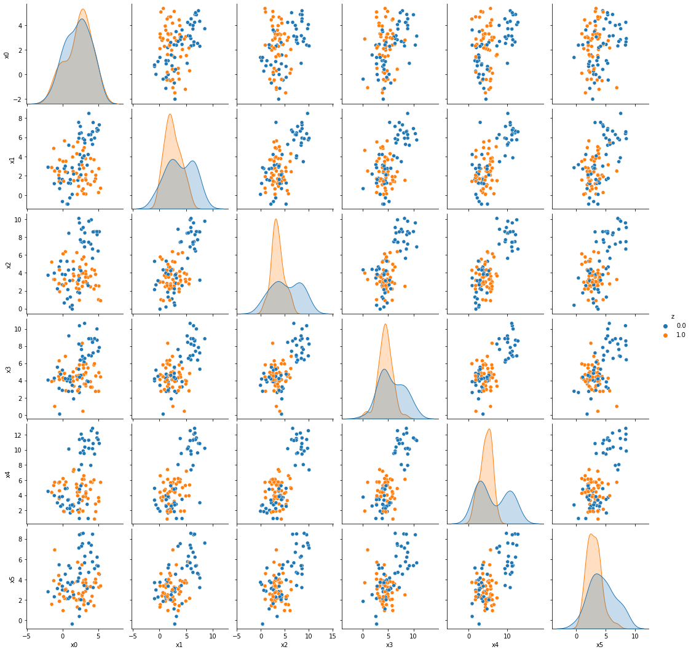

Using Population objects to create biased data
Contents
Using Population objects to create biased data#
import mlsim
import pandas as pd
import numpy as np
import seaborn as sns
from collections import namedtuple
Create an all default population
pop = mlsim.bias.Population()
To view the details on this population, we can use the get_parameter_description method.
print(pop.get_parameter_description())
Demographic Parameters
DemParams(Pa=[0.5, 0.5], Pz_a=[[0.5, 0.5], [0.5, 0.5]])
Target Parameters
TargetParams(Py_az=[[[0.95, 0.05], [0.95, 0.05]], [[0.95, 0.05], [0.95, 0.05]]])
Feature Parameters
FeatureParams(distfunc=<function <lambda> at 0x7f6d24c55e50>, theta=[[[[5, 2], [2, 5]], [[5, 2], [2, 5]]], [[[5, 2], [2, 5]], [[5, 2], [2, 5]]]])
Feature Noise Parameters
NoiseParams(noisefunc=<function <lambda> at 0x7f6d24c6a9d0>, theta=[[[1.0, 1.0], [1.0, 1.0]], [[1.0, 1.0], [1.0, 1.0]]])
The instantiation just assigns values to these parameters. In order to get data, we use the sample method.
help(pop.sample)
Help on method sample in module mlsim.bias.populations:
sample(N, return_as='DataFrame') method of mlsim.bias.populations.Population instance
sample N members of the population, according to its underlying
distribution
Parameters
-----------
N : int
number of samples
return_as : string, 'dataframe'
type to return as, can be pandas 'DataFrame' or IBM AIF360
'structuredDataset'
pop_df1 = pop.sample(100)
pop_df1.head()
| a | z | y | x0 | x1 | |
|---|---|---|---|---|---|
| 0 | 0.0 | 1.0 | 1.0 | 2.732080 | 5.616446 |
| 1 | 0.0 | 0.0 | 0.0 | 3.866303 | -0.561123 |
| 2 | 1.0 | 1.0 | 1.0 | 1.575704 | 7.048896 |
| 3 | 1.0 | 1.0 | 1.0 | 3.117752 | 5.898829 |
| 4 | 0.0 | 1.0 | 1.0 | 1.187847 | 7.516142 |
Changing the type of bias#
Now demo some with various biases to create examples
# create a correlated demographic sampler
label_bias_dem = mlsim.bias.DemographicCorrelated(rho_a=.2,rho_z=[.25,.15])
# instantiate a population with that
pop_label_bias = mlsim.bias.PopulationInstantiated(demographic_sampler=label_bias_dem)
pop_label_bias_df1 = pop_label_bias.sample(100)
pop_label_bias_df1.head()
| a | z | y | x0 | x1 | |
|---|---|---|---|---|---|
| 0 | 0.0 | 0.0 | 0.0 | 5.425464 | 1.650176 |
| 1 | 0.0 | 0.0 | 0.0 | 5.819054 | 3.621393 |
| 2 | 1.0 | 1.0 | 0.0 | 2.688509 | 3.724485 |
| 3 | 1.0 | 0.0 | 0.0 | 3.365942 | 2.958282 |
| 4 | 1.0 | 0.0 | 0.0 | 2.069026 | -0.229849 |
New we’ll create a feature bias where the classes are separable for one group and not for the other.
feature_sample_dist = lambda mu,cov :np.random.multivariate_normal(mu,cov)
per_group_means = [[[1,2,3,4,3,3],[4,6,8,8,10,6]],[[3,2,3,4,4,3],[1,3,4,4,5,3]]]
D =6
shared_cov = [np.eye(D)*.75,.95*np.eye(D)]
feature_bias = mlsim.bias.FeaturePerGroupSharedParamWithinGroup(
feature_sample_dist,per_group_means,shared_cov)
pop_feature_bias = mlsim.bias.PopulationInstantiated(feature_sampler=feature_bias)
pop_feature_bias_df1 = pop_feature_bias.sample(100)
pop_feature_bias_df1.head()
| a | z | y | x0 | x1 | x2 | x3 | x4 | x5 | |
|---|---|---|---|---|---|---|---|---|---|
| 0 | 0.0 | 0.0 | 1.0 | 2.498289 | 4.331214 | 3.441442 | 5.758555 | 3.396577 | 4.892704 |
| 1 | 1.0 | 0.0 | 0.0 | 3.285959 | 4.091601 | 9.469584 | 11.251954 | 8.942274 | 6.263358 |
| 2 | 0.0 | 0.0 | 0.0 | 1.436770 | 0.187440 | 1.499758 | 2.955885 | 2.222879 | 3.207750 |
| 3 | 0.0 | 1.0 | 1.0 | 2.993518 | 3.508044 | 4.329072 | 3.306871 | 2.945571 | 3.560012 |
| 4 | 0.0 | 0.0 | 0.0 | 2.172521 | 2.363313 | 2.643030 | 3.442915 | 6.822821 | 3.538224 |
var_list = ['x'+ str(i) for i in range(D)]
g = sns.pairplot(pop_feature_bias_df1, vars= var_list, hue = 'z')

[sns.pairplot(dffbai, vars= var_list, hue = 'z') for ai,dffbai in pop_feature_bias_df1.groupby('a')]
[<seaborn.axisgrid.PairGrid at 0x7f6d2293cca0>,
<seaborn.axisgrid.PairGrid at 0x7f6d20511520>]